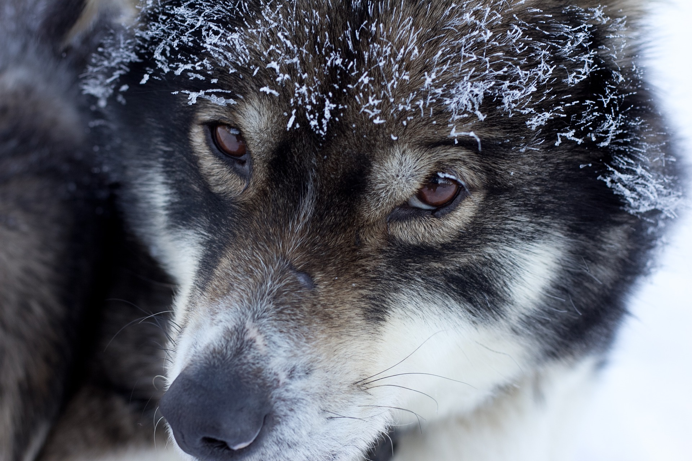
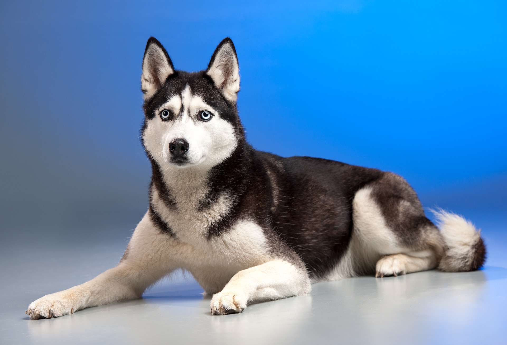
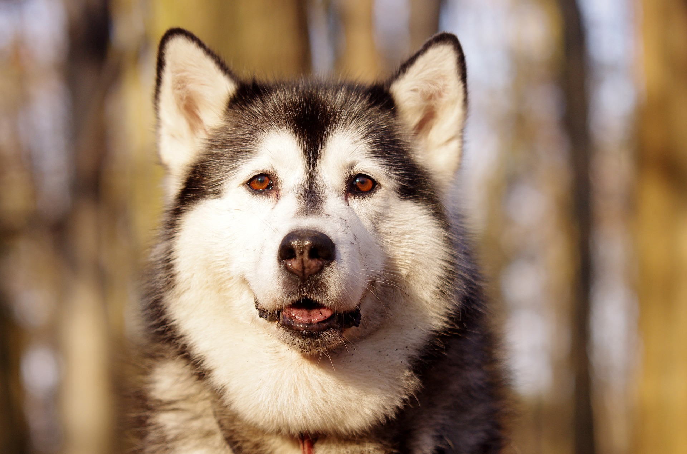
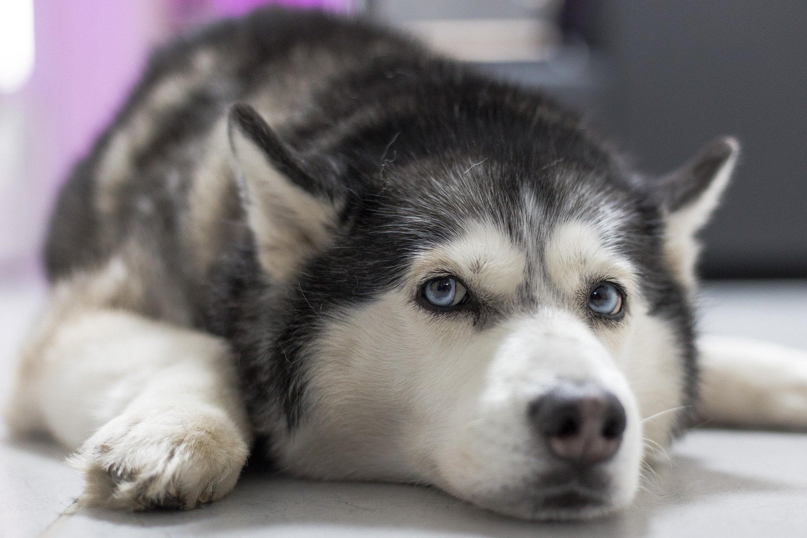
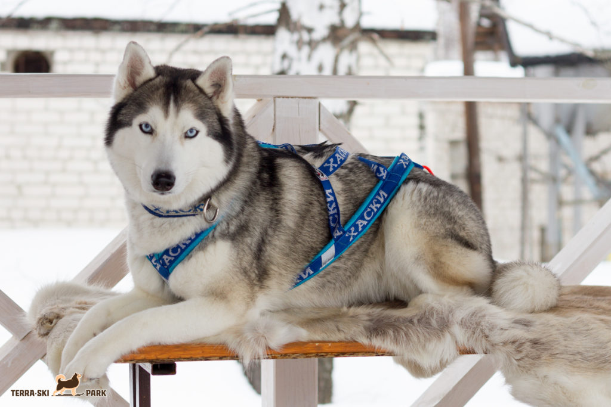

Хаски
— заводская специализированная порода собак, выведенная чукчами северо-восточной части Сибири и зарегистрированная американскими кинологами в 1930-х годах
Особенности характера:
Сибирские хаски - классические северные собаки. Они умны, но несколько независимы и упрямы. Они комфортно существуют в компании человека, нуждаются в постоянной, но бережной тренировке с самого детства. Эти собаки рождены для бега, и их любовь к бегу может время от времени побеждать их любовь к хозяевам. Сибирские хаски, как правило, дружат с людьми, включая детей.Большинство сибирских хаски хорошо ладят с другими собаками, особенно с теми, с которыми они выросли.
История:
  Россия, и Соединенные Штаты Америки любят претендовать на сибирского хаски. Порода была разработана чукотским племенем северо-восточной Азии более 3000 лет назад для помощи в их кочевой жизни в качестве ездовой собаки. Безусловно в предках породы есть шпицы.
Происхождение:
Почти вся генетическая близость собак с серым волком связана с примесью. Однако некоторые арктические породы также проявляют генетическую близость с ныне вымершим таймырским волком из Северной Азии из-за примеси: сибирский хаски и гренландская собака (которая также исторически связана с арктическими популяциями человека), и в меньшей степени шарпей и финский шпиц.
Предками хаски были сибирские ездовые лайки, которые, по одной из версий, были выведены на Чукотке и завезены в Северную Америку. Здесь они слились с местной популяцией ездовых собак и образовали новую породу. График смешения гренландской собаки показывает оптимальный вариант в 3,5 % общий материал; однако пропорция предков колебались в пределах от 1,4 % до 27,3 %, что согласуется с данными и указывает на смесь между таймырским волком и предками этих четырёх высокоширотных пород.
Такая интрогрессия могла обеспечить первым собакам, живущим в высоких широтах, фенотипические вариации, полезные для адаптации к новой и сложной обстановке, внося весомый вклад в развитие хаски. Это также указывает на то, что предки нынешних пород происходят из более чем одного региона.
Породы:
Хаски были выведены коренными народами Арктики. Примеры этих пород в современную эпоху были выборочно разведены и зарегистрированы в различных кинологических клубах как современные чистокровные породы, в том числе сибирских хаски и лабрадор хаски. Сахалинский хаски — японская ездовая собака, связанная с японским шпицем и Акита-ину. Аляскинский хаски — это разновидность ездовых собак, появившихся на Аляске (а не в Сибири и других районах Арктики), а Маккензи-ривер-хаски — это подтип, относящийся к разным собачьим популяциям в Арктике и субарктических регионах Аляски и Канады. К другим породам хаски относятся гренландская собака, самоед.
Хаски
| Место | Рост | |||
| Россия | Мльчика 53,5—60 см | Девочки 50,5—56 см | ||